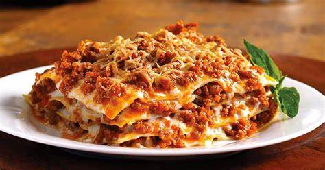

Traditionell Lasagne
60min

- 1 1/2 stor gul lök
- 2 stora klyftor vitlök
- 600g nötfärs
- Salt
- Vitpeppar
- 2 burkar krossade tomater (Mutti)
- 1 dl chilisås
- 1 dl ketchup
- 2 msk tomatpuré
- 2 msk oxfond
- Några droppar soja
- Torra lasagneplattor ca 12 stycken
Köttfärsröra
- 100g smör
- 60g vetemjöl
- 7 dl standardmjölk
- 3 dl vispgrädde
- 150g prästost
- 50g parmesanost
- Salt
- Vitpeppar
Ostsås
- 100g riven ost
Topping
Gör så här:
Förvärm ugnen till 190 °C.
För att göra köttsåsen, fräs lök och vitlök tills de är mjuka.
Tillsätt nötfärs och koka tills det är brunt.
Rör ner San Remo tomatbaserad sås.
Krydda med salt och peppar efter smak.
Täck och låt sjuda i 10-20 minuter.
För att göra ostsåsen, värm smör i en kastrull på låg värme.
Tillsätt mjöl och blanda tills det är jämnt.
Tillsätt gradvis mjölk och koka försiktigt under omrörning tills den är tjock och jämn.
Tillsätt parmesan eller cheddarost, rör om tills den smält.
För att konstruera lasagne, i en lätt smord ugnsform, lägg köttsås, ostsås och lasagneplattor
(se till att lasagneplattorna är helt täckta).
Upprepa lager, avsluta med ostsås. Sprid över mozzarellaost.
Täck löst med folie, baka 20 minuter. Ta bort folien, grädda ytterligare 5-10 minuter tills den är brunad.
Servera och njut med familj och vänner!